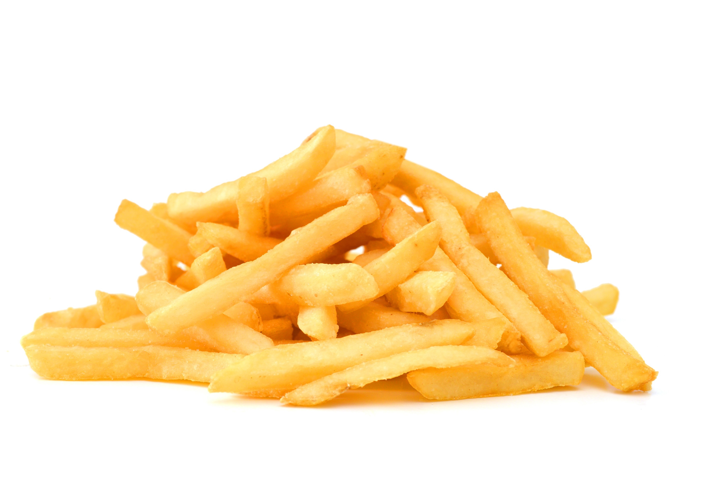

Receta de papas fritas
Esta es una receta para unas deliciosas papas fritas

Ingredientes:
- 1Kg de Papas Fritas
- ½ litro de Aceite
- Sal al gusto
Preparación:
- Lavar y pelar las papas
- Cortarlas en bastones
- Calentar el aceite
- Freír las papas hasta tener un tono dorado
- Servirlas con un poco de sal
Regresar a Recetas